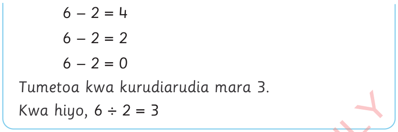
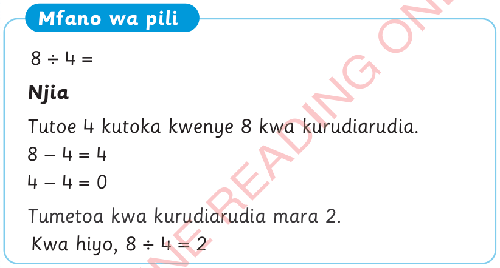

6 - 2 = 4
6 - 2 = 2
6 - 2 = 0
Tumetoa kwa kurudiarudia mara 3.
Kwa hiyo,

Mfano wa pili
Njia
Tutoe 4 kutoka kwenye 8 kwa kurudiarudia.
8 - 4 = 4
4 - 4 = 0
Tumetoa kwa kurudiarudia mara 2.
Kwa hiyo,